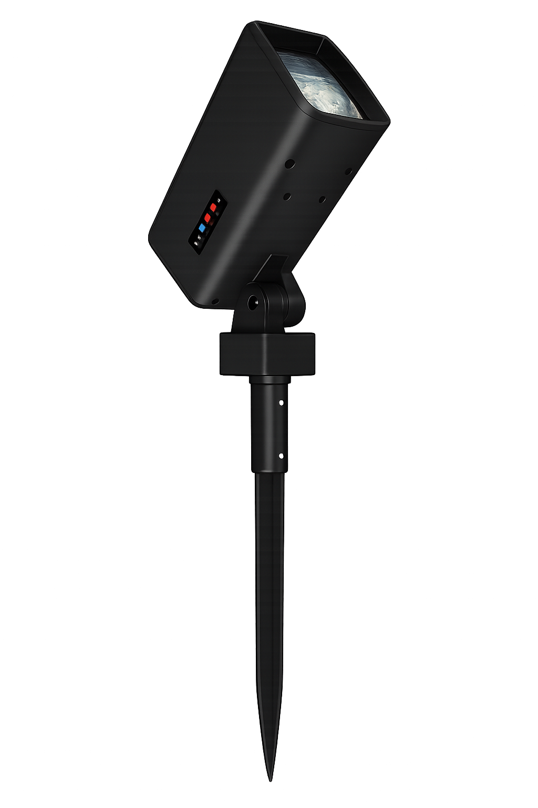

Bluetooth
Obsługa trybu sieciowania oraz trybu pojedynczego z kontrolą wskaźników LED.
Minimalistyczna lampa solarna do ogrodu, ścieżek i nowoczesnych aranżacji zewnętrznych. Design w klimacie premium, sterowanie RGB, Bluetooth oraz automatyczne śledzenie światła słonecznego.

Obsługa trybu sieciowania oraz trybu pojedynczego z kontrolą wskaźników LED.
Manualne cykliczne przełączanie kolorów, dzięki czemu lampa może pełnić funkcję dekoracyjną.
Czujnik światła wykrywa i śledzi najsilniejsze źródło światła dla lepszego ładowania panelu.
Klasa IP65, zakres pracy od -20°C do 40°C oraz konstrukcja do zastosowań zewnętrznych.
Model SARA wygląda technicznie i nowocześnie, dlatego dobrze pasuje do minimalistycznej identyfikacji wizualnej AXEN. Czarna obudowa, prosta linia oraz oświetlenie RGB sprawiają, że produkt nadaje się zarówno do nowoczesnego ogrodu, jak i do ekspozycji na stronie głównej sklepu.
| Kategoria | Parametr | Wartość |
|---|---|---|
| Podstawowe | Nazwa modelu | Solar Lawn Spotlight SARA |
| Item Number | SRAP | |
| Kolor | Czarny | |
| CCT | RGB | |
| Wymiary i światło | Wymiar lampy | 83 × 94 × 475.5 mm |
| Strumień świetlny | 100 lm | |
| LED | Rzeczywista moc | 2W |
| Typ diody | 5050RGB / 4PCS LED chip | |
| Gwarancja LED | 3 lata | |
| Akumulator | Typ | Lithium iron phosphate / 3.7V |
| Pojemność | 3600 mAh | |
| Gwarancja akumulatora | 1 rok | |
| Panel solarny | Moc panelu | 2W |
| Rozmiar panelu | L170 × W60 mm | |
| Materiał | Monocrystalline PET | |
| Parametry pracy | Czas ładowania solarnego | 8–12 h |
| Rozsył światła | Nearly Round | |
| Czas świecenia | 4–5 rainy days | |
| CCT | RGB | |
| CRI | Ra > 80 | |
| Klasa szczelności | IP65 | |
| Surge protection | ≥ 4KV | |
| Temperatura pracy | -20°C ~ 40°C | |
| Certyfikaty | Normy | CE, RoHS |
| Odporność mechaniczna | IK06 | |
| Pakowanie | Ilość w opakowaniu jednostkowym | 1 pcs / color box |
| Rozmiar opakowania jednostkowego | 195 × 150 × 100 mm | |
| Ilość w kartonie zbiorczym | 18 pcs / ctn | |
| Rozmiar kartonu | 615 × 325 × 330 mm | |
| Waga | N.W. (CTN) | 9.0 kg |
| G.W. (CTN) | 11.7 kg |
Po naciśnięciu zapala się wskaźnik zasilania na czerwono, a wskaźnik Bluetooth na niebiesko. Silnik zaczyna pracować.
Aktywuje lub wyłącza tryb sieciowania Bluetooth. W trybie network wskaźnik niebieski świeci lub miga.
Przycisk RGB przełącza kolor światła. Możesz użyć go jako funkcji dekoracyjnej przy ekspozycji ogrodowej.
W dzień wykrywa i śledzi najsilniejsze światło. W nocy uruchamia świecenie RGB w trybie cyklicznym.
Możesz zostawić tę sekcję jako galerię techniczną albo później podmienić ją na zdjęcia lifestyle i zdjęcia packshotowe.
Nie. Model SARA jest zasilany solarnie i ładuje się w ciągu dnia przy użyciu panelu 2W.
Tak. Produkt ma przełącznik RGB do manualnego, cyklicznego przełączania kolorów światła.
Tak. To lampa ogrodowa typu spotlight ze szpikulcem, przeznaczona do montażu w gruncie i ekspozycji zewnętrznej.
Możesz wkleić HTML do niestandardowej sekcji, a CSS i JS dodać do plików motywu. Przyciski „Kup teraz” wystarczy podmienić na linki do produktu lub koszyka Shopify.
Ten projekt jest przygotowany w osobnych plikach HTML, CSS i JS, dzięki czemu łatwo go przerobisz na sekcję motywu Shopify albo landing page produktu.